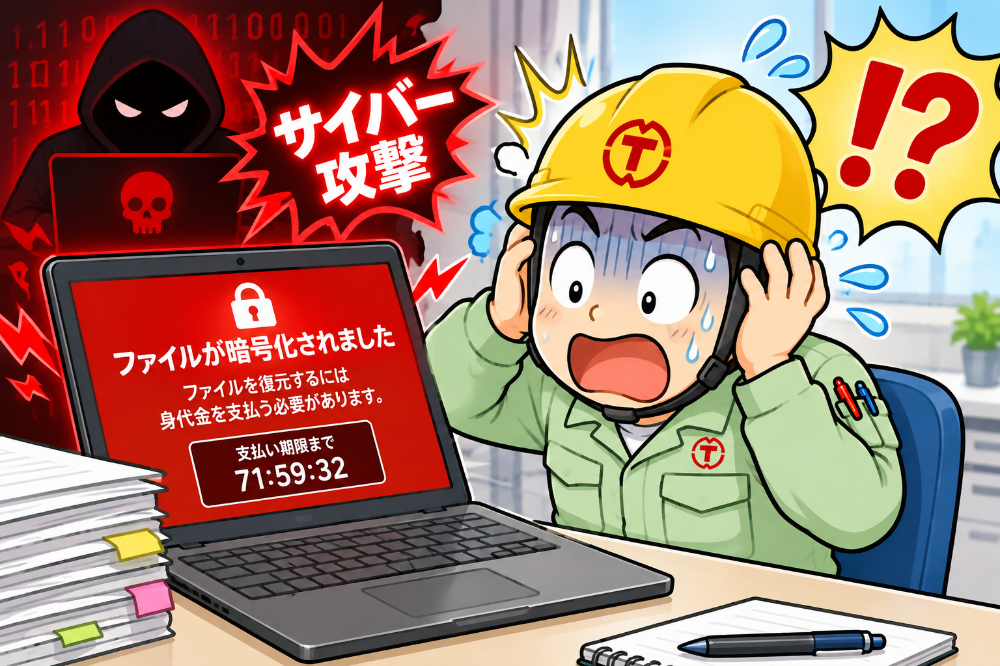
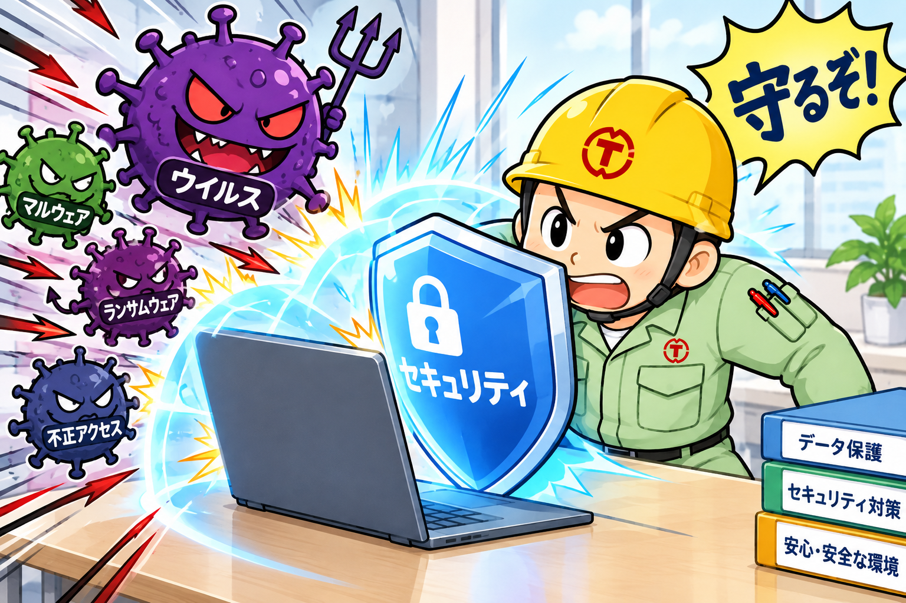

デジタルで、もっと前へ。
デジタルで、私たちの「はたらく」をもっと自由に。
DX推進 - 社内報 Vol. 8 | 2026.10.19
デジタルで、私たちの「はたらく」をもっと自由に。
工場に入るとき、ヘルメットをかぶり、安全靴を履く。クレーンを動かす前には指差呼称をする。私たちにとって、これは「わざわざ意識すること」ではなく、当たり前の習慣になっています。
では、パソコンを開くとき、メールの添付ファイルをクリックするとき、同じくらい「安全」を意識しているでしょうか。
今回のテーマは「情報セキュリティ」です。難しい専門用語の話ではなく、現場の「安全」と同じ感覚で考えてみよう、という話です。
製造業の現場では、生産性と安全は表裏一体です。どれだけ効率よく作れても、事故が起きればすべてが止まります。だからこそ、安全はスピードよりも先に置かれてきました。（安全第一！）
情報を扱う仕事もまったく同じです。どれだけ便利なツールを使っていても、情報が漏れたり、システムが止まったりすれば、仕事そのものが止まってしまいます。
実は、現場で当たり前にやっていることの多くは、そのまま情報セキュリティに置き換えられます。
「セキュリティ」と聞くと身構えてしまいますが、考え方は私たちがずっと現場で積み重ねてきたものと同じです。
DX推進チームとして、ここは正直にお伝えしておきたいところです。デジタル化が進むと、仕事は便利になります。その一方で、守らなければならないものも増えていきます。
実際に国内でも、ランサムウェア（データを暗号化して身代金を要求するウイルス）の被害によって、工場の生産が何日も止まってしまった事例が報告されています。きっかけの多くは、1通のメールや、使い回されたパスワードといった、ごく身近なところにあります。

（この画像はChatGPTで作成しました）
毎日のようにサイバー攻撃、情報漏洩事故のニュースを見聞きします。いつ、当社がそうなってもおかしなことではありません。復旧対応、説明会見、謝罪会見・・・想像したくもありません。
Vol.5の「PPAP対策」や、Vol.7の「ファイルの迷子」も、実はこの話とつながっています。便利さと安全は、セットで進めていく必要があります。
情報セキュリティは、もはや自社だけの問題ではありません。サイバー攻撃では、セキュリティ対策の手薄な取引先を経由して、大手企業が狙われるケースも少なくありません。
こうした背景から、国（経済産業省・IPA）では、サプライチェーン全体で企業のセキュリティ対策の水準を確認できるようにする「SCS評価制度」の整備が進められています。
★1、★2はすでに「SECURITY ACTION」としてすべての企業が実施することが推奨されています。★3、★4は2027年1月～3月頃に制定される見通しです。
今後、取引先からセキュリティ対策の状況を問われる場面は、確実に増えていくと考えられます。
わかりやすい資料を提供いただいてますので、こちらも参照ください。
→ SCS評価制度とは？制度の概要解説BOOK / リコージャパン株式会社品質や納期と同じように、「情報を安心して預けられる会社かどうか」も、取引先からの信頼の一部になりつつあります。
「セキュリティ対策はどのようにされていますか？」「SCS評価制度の星はいくつですか？」と営業段階で問われることになります。「のちほど弊社セキュリティ担当者から回答させます」ではダメです。情報セキュリティスペシャリストもセキュリティ担当者も当社には存在しません。
全社をあげて取り組む必要があります。全員参加が必須です。教育・訓練が必要です。
現実として当社は★1もクリアできていません。セキュリティソフトの管理画面から社内PCの状況を確認すると、大半のPCが最新のセキュリティパッチを適用していません。OSやソフトウェアの更新はユーザー各自で定期的に行うようにしてください。
安全活動も、まずは現場の危険を洗い出すところから始まります。情報セキュリティも同じで、最初の一歩は「今どこが弱いのか」を知ることです。
IPA（情報処理推進機構）が公開している「5分でできる！情報セキュリティ自社診断」は、25の質問に答えるだけで、対策の状況をざっくり確認できるチェックシートです。解説編には、それぞれの対策の意味や具体的なやり方もまとめられています。
→ 5分でできる！情報セキュリティ自社診断 / IPA「全部できている」必要はありません。できていないところが分かれば、それが次の改善ポイントです。
自己採点、評価をしてみてください。わからないところは率直に「わからない」として結構です。希望があれば筆者が採点したものをお見せいたします。きっと、みなさんより高い点数になっていると思います。
また、診断項目は裏返せばやってはいけないことです。自身のセキュリティポリシー向上に役立ててください。
Vol.6の「知っているだけでは、変わらない。」でお伝えしたとおり、知っているだけでは何も変わりません。まずは次のような小さな行動から始めてみませんか。
特に最後の「報告」が大切です。現場のヒヤリハットと同じで、早く共有されるほど被害は小さく抑えられます。「開いてしまった」と正直に言える雰囲気づくりも、立派なセキュリティ対策です。
「安全第一」は、現場の誰もが体に染みついている言葉だと思います。デジタルの世界でも、同じように「セキュリティ第一」が当たり前になれば、DXはもっと安心して前に進められるはずです。
DX推進チーム発足に向けて協力していただける方を募集中です。
「こんなメールが届いて怪しいと思った」「うちの部署ではこんな対策をしている」といった声も大歓迎です。ぜひ教えてください。

（この画像はChatGPTで作成しました）